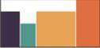

주축 방향 아이템 배치
- justify-content : flex-start 기본값
- justify-content : flex-end 주축의 끝점 배치

- justify-content : center 주축의 중앙 배치
- justify-content : space-between 요소 간 여백 (양끝 배치 + 중앙정렬)
- justify-content : space-around 박스마다 좌우 동일여백 10 box1 20(box1의 10 + box2의 10) box2 10
- justify-content : space-evenly 모두 동일 여백 10 box1 10 box2 10
교차축 방향 아이템 배치
- align-items : stretch 기본값
- align-items : flex-start 교차축의 시작점 배치
- align-items : flex-end 교차축의 끝점 배치

- align-items : center 교차축의 중앙 배치
- align-items : baseline 교차축에서 가장 멀리 떨어진 text 기준 배치